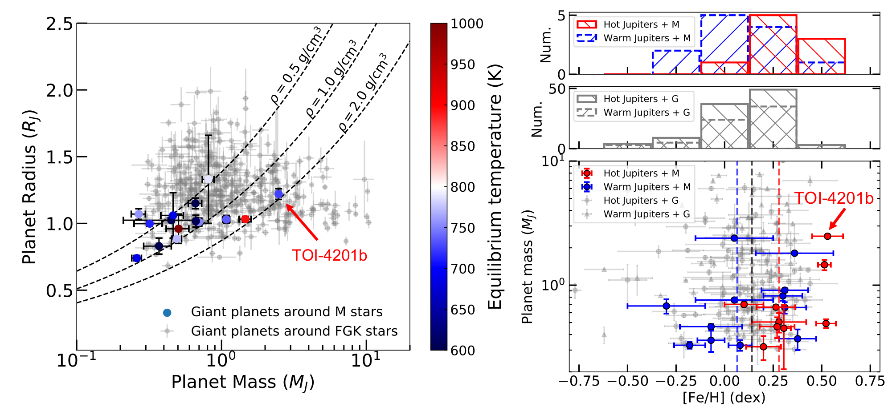
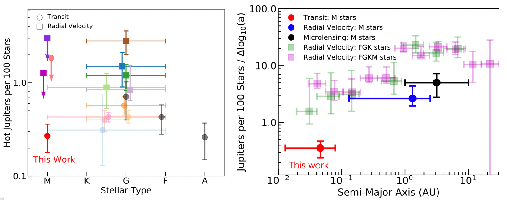
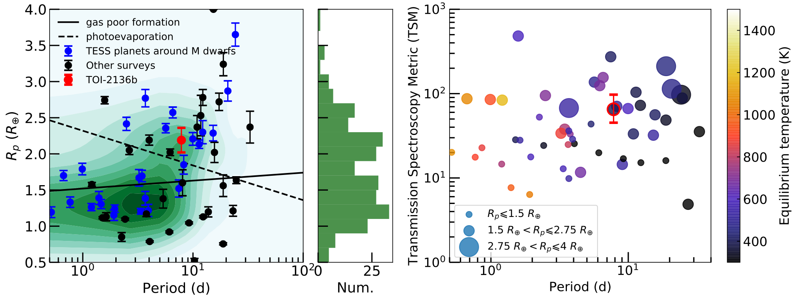
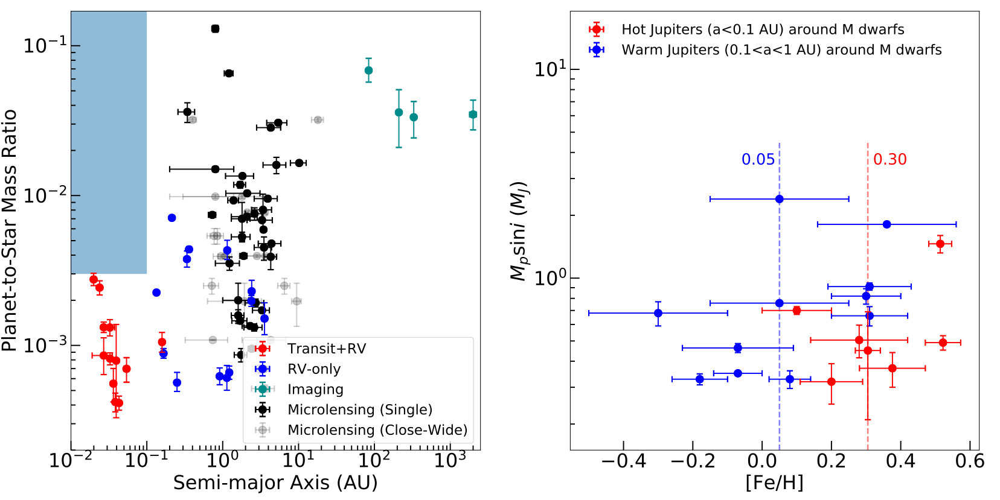
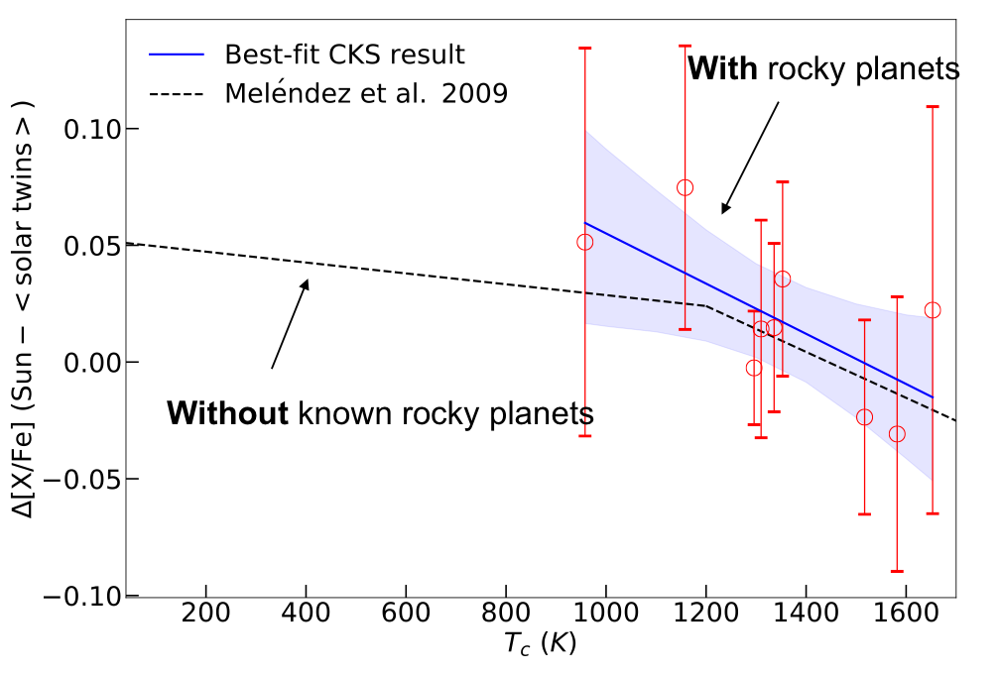
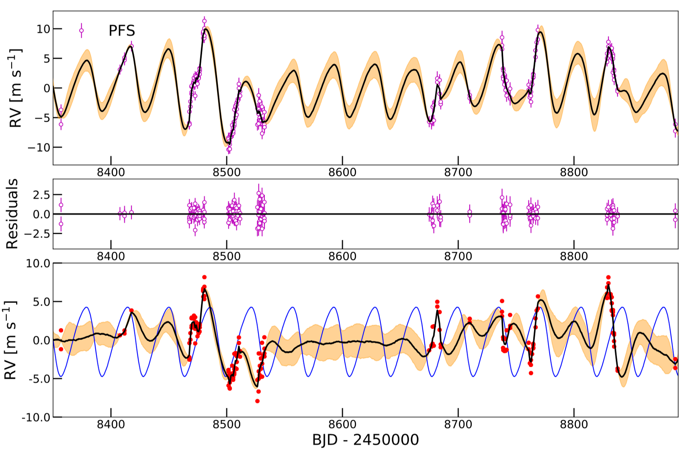
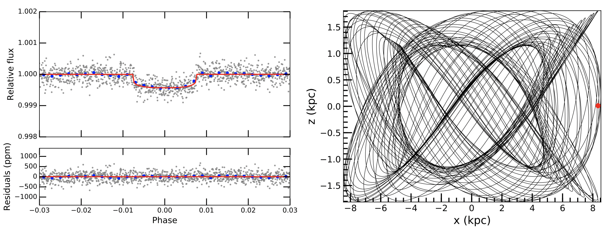

Gaia Astrometry and Ground RV Joint Analysis Enables the Detections of Cold Jupiters
Gan, T. 2023c, Gaia Astrometry and MIKE+PFS Doppler Data Joint Analysis Reveals that HD 175167b is a Massive Cold Jupiter

Time-series (left) and phase-folded (middle) RV data of HD 175167 from MIKE and PFS along with the best-fit model. Right panel: The orbit of the HD 175167b constructed based on the best-fit physical parameters.
Astrometry is a promising pathway to increase the number of cold Jupiters, in particular, around M dwarfs. Although the Gaia DR4 time-series astrometry data would not be available before the end of 2015, the non-single-star two body catalog released along with Gaia DR3 catches a lot of attention. It includes orbital solutions for about 165,500 systems, among which 1162 sources are potential substellar objects (Halbwachs et al. 2023; Holl et al. 2023). Each orbital solution contains the best-fit orbital parameters like four Thiele-Innes coefficients, period, eccentricity, time of periastron and parallax along with a correlation matrix between them. Recent work from Winn 2022 proposed a method to conduct a joint-analysis with these two-body solutions and ground-based RV data.
Based on this method, this work reanalyzes the HD 175167 system, a possible brown dwarf with a mass about 14.8±1.8 MJ around a Sun-like star studied by Winn 2022, after including additional RV data from Magellan/PFS. The new joint-fit reveals that the companion is a massive cold Jupiter with a mass of Mp = 10.2±0.4 MJ and a period of Pb = 1275.8±0.4 days. The planet orbit is inclined by i = 38.6±1.7 degrees with an eccentricity of 0.529 ± 0.002. Takng these Gaia two-body solutions as bases, more buried cold planets/sub-stellar companions in the RV data archive would be found.
A Massive But Inflated Hot Jupiter Orbiting a Metal-rich Early-M Star
Gan, T., Cadieux, C., et al. 2023b, A Massive Hot Jupiter Orbiting a Metal-rich Early M Star Discovered in the TESS Full-frame Images

Left panel: Planet mass and radius diagram. The gray dots are giant planets around FGK stars. The colored dots are all transiting gas giants around M dwarfs with mass measurements. Different colors represent different equilibrium temperatures. Right panel: Planet mass (Mp or Mpsin i) versus host star metallicity. The red and blue dots are hot (a/R* < 20) and warm (a/R*> 20) Jupiters around M dwarfs. The vertical red and blue dashed lines are the median metallicity of two samples: 0.28 and 0.06 dex. The background gray dots and triangles are hot and warm Jupiters around G-type stars under the same definition. Both of them have a median iron abundance of 0.14 dex, shown as a vertical black line. The top two panels are the histogram of these four samples.
Giant planets around FGK stars have both diverse radius and mass (see the left panel). This is mainly due to the wide-spanned incident flux that these planets received so some of them are inflated. For giant planets around M dwarfs, they have masses spanning orders of magnitude but relatively concentrated radius. However, our recent confirmed planet TOI-4201b, which is the most massive hot Jupiter known so far around an M dwarf, seems to be inflated although the incident flux is low. We suspect that it is perhaps due to additional energy sources like tidal heating, giant planet merger or embryo capture by a gas giant during its formation.
Building on the detection of this planet, we compare the stellar metallicity distribution of four planetary groups: hot/warm Jupiters around G/M dwarfs. We find that hot/warm Jupiters show a similar metallicity dependence around G-type stars. For M dwarf host stars, the occurrence of hot Jupiters shows a much stronger correlation with iron abundance, while warm Jupiters display a weaker preference, indicating possible different formation histories (see the right panel).
Occurrence Rate of Hot Jupiters around Early-type M Dwarfs Based on TESS Data
Gan, T., Wang, X.S., et al. 2023a, Occurrence rate of hot Jupiters around early-type M dwarfs based on TESS data

Left panel: Occurrence rates of hot Jupiters as a function of stellar type. Results from transit and RV surveys are shown as circles and squares, respectively. The horizontal uncertainties mark the range of stellar type used in each work. We added small random shifts to the horizontal coordinates for clarity. Right panel: The occurrence rate of Jupiters around M dwarfs per logarithmic semi-major axis bin (dN/d log10a) as a function of semi-major axis. The horizontal uncertainties mark the range of semi-major axis of the planet sample in each study. For comparison, the occurrence rates of Jupiters around FGK and FGKM dwarfs studied by Wittenmyer et al. (2020) and Fulton et al. (2021) from RV surveys are shown as green and magenta translucent squares. Different colors represent results from different studies.
Based on TESS observations, we measured the first non-upper limit occurrence rate of hot Jupiters around M dwarfs. We adopted stellar parameters from the TESS Input Catalog, and construct a sample of 60,819 M dwarfs with 10.5 ≤ Tmag ≤ 13.5, effective temperature 2900 ≤ Teff ≤ 4000 K and stellar mass 0.45 ≤ M* ≤ 0.65 M⊙. We conducted a uninformed transit search using a detection pipeline based on the box least square search and characterized the searching completeness through an injection and recovery experiment. We combined a series of vetting steps including light centroid measurement, odd/even and secondary eclipse analysis, rotation and transit period synchronization tests as well as inspecting the ground-based photometric, spectroscopic and imaging observations.
We finally obtained an occurrence rate of 0.27±0.09% for hot Jupiters around early-type M dwarfs that satisfy our selection criteria. Combining with previous studies on FGKM stars, our results show 1) a possible peak of hot Jupiter occurrence rate near G stars and fall towards the hotter and cooler stars; 2) a possible steeper decrease in occurrence rate of Jovian-like planets per logarithmic semi-major axis bin (dN/d log10a) in M stars towards small semi-major axis. Both of these observational features should be explained by future advanced planet formation models.
Small Planets around M Dwarfs for Radius Valley and Atmospheric Studies
Gan, T., Soubkiou, A., et al. 2022b, TESS discovery of a sub-Neptune orbiting a mid-M dwarf TOI-2136

Left panel: The planet radius and orbital period diagram of all confirmed small planets hosted by M stars. The green contours are the density distribution of planets without mass measurements. The coloured points are the planets with mass constraint. The solid and dashed lines depict the locations of radius valley for M stars predicted by the gas-poor and photoevaporation models. Right panel: The transmission spectroscopy metric as a function of orbital period for small planets around M dwarfs. TOI-2136 b is shown as a dot surrounded by a red circle with error bars.
The bimodality of radius distribution shown in small planets around FGK stars, which splits them into super-Earths and sub-Neptunes, is known as a transition between planets with and without extended gaseous envelopes. This feature approximately agrees with the prediction from the thermally driven atmospheric mass-loss scenarios including photoevaporation and core-powered envelope escape, where the radius valley follows rp, valley ∝ Period -0.15. However, some observational results suggested that the transition radius of small planets around M dwarfs is likely in accordance with the gas-poor formation model, following rp, valley ∝ Period 0.11. Increasing the number of small planets around M dwarfs would help understand dominance of these competing physical processes at the low stellar mass end and further investigate the behaviour of planet radius valley as a function of stellar mass.
In this work, we confirmed the planetary nature of a sub-Neptune (TOI-2136b) orbiting a mid-M dwarf every 7.85 days that is suitable for atmospheric characterization. The planet has a radius of 2.2 R⊕ and a mass of 6.4 M⊕, which is consistent with a broad range of compositions, from water-ice to gas-dominated worlds. TOI-2136b falls close to the radius valley for M dwarfs predicted by thermally driven atmospheric mass-loss models, making it an interesting target for future studies of its interior structure and atmospheric properties.
Mass Ratio and Stellar metallicity Distributions of Giant Planets around M Dwarfs
Gan, T., Lin, Z., et al. 2022a, TOI-530b: a giant planet transiting an M-dwarf detected by TESS

Left panel: Planet-to-star mass ratio of all giant planets around M-dwarfs as a function of semi-major axis. Different colours represent planets detected by different methods. The blue shaded region represents a possible paucity of hot massive giant planets around M dwarfs. Right panel: Host star metallicy distribution of hot (red) and warm (blue) Jupiters around M dwarfs.
With the highest planet-to-star mass ratio among planetary systems, giant planets around M dwarfs are the extreme cases to test current planet formation theories. Over the last two decades, more than a thousand transiting giant planets have been discovered. However, only ~10 hot Jupiters are confirmed to transit M-type stars even though M dwarfs are the most abundant stellar population in our Milky Way. The scarcity of such systems is supposed to be relevant to the failed growth of a massive core to start runaway accretion before disk dissipation. Nevertheless, radial velocity (RV) and microlensing surveys have found numerous (~30) cold Jupiters around M dwarfs. Gravitational instability is thus speculated to be the alternative formation mechanism. The formation channel of giant planets especially hot Jupiters around M dwarfs, is still under debate.
In this work, we confirmed a new giant planet (TOI-530b) around an early-type M dwarf discovered by TESS. The planet has a radius of 0.8 Jupiter radius and a mass about 0.4 Jupiter mass with a period of 6.4 days. Based on all known giant planets around M dwarfs detected by transit, RV, microlensing and direct imaging, we study their mass ratio and semi-major axis distributions. We identified a dearth of hot massive giant planets around M dwarfs, which was considered as a sign of planet migration or two different formation mechanisms. We further investigated the host star metallicity distributions of hot and warm Jupiters, where we found that hot Jupiters have stronger preference on stellar metallicity with a median value of 0.3 dex.
Correlation Between the Solar Twin Abundance Pattern and Rocky Planet Formation?
Gan, T., Bedell, M., et al. 2021b, HD 183579b: a warm sub-Neptune transiting a solar twin detected by TESS

The mean abundance difference between 36 CKS solar twins with rocky planets and the Sun as a function of condensation temperature of each element. The blue solid line is the linear fit to the abundance trend. The black dashed line represents the mean abundance difference measurements of 11 nearby solar twins without known planets from previous work. The results indicate that rocky planet formation is probably not the dominated reason for the solar depletion pattern.
Stellar element abundances are important as they may reflect the history of planet formation. Solar twins are an important subset of Sun-like stars. Typically defined by their extreme similarity to the Sun in fundamental spectroscopic properties (Teff within 100 K, log g within 0.1 dex, and [Fe/H] within 0.1 dex of Solar values), these stars must by definition have such similar photospheric conditions to the Sun so that their spectra can be directly compared with minimal reliance on stellar atmospheric models. The result of a line-by-line differential spectroscopic analysis of a solar twin yields uniquely precise abundance measurements for the star and thereby for the star-planet system.
Previous studies reported that our Sun shows a refractory element depletion when compared with nearby solar twins. It has been suggested that the Sun's relative depletion in refractories can be attributed to terrestrial planet formation, with refractory materials in the Solar protoplanetary disk being preferentially ''locked up'' in planetesimals before the disk material was accreted onto the Sun. Alternative theories including planet ingestion and galactic chemical evolution (GCE) might be able to explain this phenomenon. However, Bedell et al. 2018 confirmed that the depletion pattern still exists even if the GCE effect has been corrected. More recently, several works proposed that the gap opened during the giant planet formation may limit dust accretion by the host star from the disk area exterior to the forming giant planet, which may also result in the depletion in the star like our Sun.
To diagnose whether rocky planet formation is the major effect, we constructed a sub-sample of solar twins with rocky planets selected from the California-Kepler Survey and studied their element abundance, where the preliminary result showed no statistically significant element depletion like our Sun. This infers that the Solar depletion feature is perhaps not related to rocky planets. We are building a bright TESS solar twin sample with planet candidates and taking Magellan/MIKE spectra with higher SNR to further study this problem through line-by-line differential analysis.
An Inconvenient Entanglement on The Planet Signal and Stellar Rotation
Gan, T., Wang, X.S., et al. 2021a, Revisiting the HD 21749 planetary system with stellar activity modelling

Top panel: PFS RV data along with the best-fit GP+planet model.The shaded yellow region represents the 1σ estimate. Middle panel: RV residuals after subtracting the best-fit model. Bottom panel: The red points are the total RV subtracting the best-fit Keplerian component of the GP + Keplerian fit for PFS-only data. The black line is the predicted GP curve. The best-fit Keplerian orbit is shown as the blue curve.
Due to the proximity and brightness, HD 21749 is a remarkable target for investigating the atmospheric properties of its companion. Therefore, mass measurement is especially important to HD 21749b because of the degeneracy between the planet mass and the mean molecular weight. However, HD 21749b has an inconvenient entanglement of the planetary signal and the stellar activity, which have very similar timescales and exhibit similar RV amplitudes.
We took the stellar rotation information from the TESS light curve and included it in the Gaussian Process (GP) + RV modeling, where we disentangle the planetary component from the stellar activity signal in the RVs. Using Monte Carlo simulations, we confirmed that without properly taking stellar activity signals into account, the mass measurement of HD21749b is likely to arrive at a significantly underestimated error bar. Previous successful cases of disentanglement using GP very often dealt with systems where the two signals operate on very different timescales. Our work demonstrated that nightly, high-cadence RV observations could retrieve the planet's RV semi-amplitude without significant bias for such extreme cases.
A Thick-Disc Planet Detected by TESS
Gan, T., Shporer, A., et al. 2020, LHS 1815b: The First Thick-disk Planet Detected by TESS

Left panel: Phase-folded TESS light curve of LHS-1815 along with the best-fit transit model. Right panel: The integrated orbit of LHS 1815 in the Galactic potential MWPotential2014 obtained using galpy in the edge-on view.
To date, more than 4000 exoplanets have been detected, but few of them have been claimed to be in the thick disk of the Milky Way. A common way to separate different components of the Milky Way (for example, thin and thick disks) relies on the three-dimensinal (3D) spatial motions of stars. This has become possible with GAIA, a space telescope which gives distance, proper motions for relatively bright stars. Furthermore, the recent launched Transiting Exoplanet Survey Satellite (TESS) aims to discover a large sample of planets around bright stars in the solar neighborhood across the whole sky. Combined with GAIA, TESS offers an exciting opportunity to study the difference in the planet formation efficiency between stars in the thin and thick disks, which have different age and metallicity distributions.
LHS 1815b is the first thick-disc planet detected by TESS. The planet has a radius of 1.1 Earth radius with a period of 3.8 days. We analyzed the orbit of the host star LHS 1815, and found that it most likely belongs to the thick disk, reaching about 1.8 kpc above the Galactic plane, several times the height reached by typical stars from the thin disk.